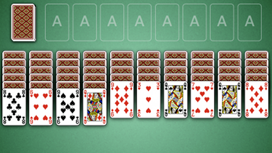
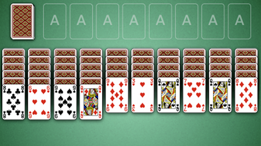

How to Play Spider
Game Setup
Stock: The stock is the pile of face down cards in the top left corner of the board. When the player
clicks on the stock, a card is dealt to the top of each of the 10 tableau.
Foundations: The foundations are the 8 areas along the top of the table next to the stock. Initially the foundations are empty, but as the game progresses the foundaions will be filled with completed columns of cards.
Tableau: The tableau are the 10 piles of cards stacked along the bottom of the table. The tableau begin with all cards face down except for the top card which is left face up. The tableau may be built down by rank.

Foundations: The foundations are the 8 areas along the top of the table next to the stock. Initially the foundations are empty, but as the game progresses the foundaions will be filled with completed columns of cards.
Tableau: The tableau are the 10 piles of cards stacked along the bottom of the table. The tableau begin with all cards face down except for the top card which is left face up. The tableau may be built down by rank.

Rules
Spider is played with two decks of cards. The goal of the game is to place all 104 cards into the
foundations. Sequences of cards must be assembled in the tableau before they can be moved to a foundation.
That is, you must have a complete sequence built down (K, Q, J, 10, ... , 2, A) by suit before the group
of cards may be moved into a foundation.
The tablueas are used to organize columns of cards until it becomes possible to place them into the foundations. Columns can be built down by rank and in-suit sequences may be moved as a group. If a face down card is on the top of a tableau, it can be flipped by clicking on it. Any card may be placed into an empty tableau.
At any point during the game the player may click the stock to deal 10 more cards, one card to each tableau.
The tablueas are used to organize columns of cards until it becomes possible to place them into the foundations. Columns can be built down by rank and in-suit sequences may be moved as a group. If a face down card is on the top of a tableau, it can be flipped by clicking on it. Any card may be placed into an empty tableau.
At any point during the game the player may click the stock to deal 10 more cards, one card to each tableau.
Scoring
Scoring is calculated with a starting score of 500. One point is subtracted for each move and
100 points are added for each complete sequence moved into the foundation.